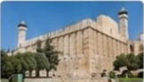
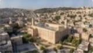
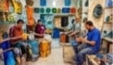
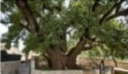
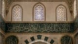
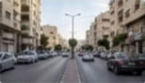
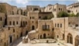
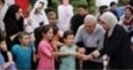
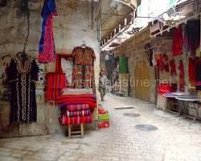

الخليل.. تاريخ وحداثة
"الخليل.. تاريخ قديم أصوله التاريخ القديم ويتعلق ببهى الأهمية الاقتصادية والاجتماعية واستندت في التراث الثقافي الفترات الثقافية."

الحرم الإبراهيمي الشريف
أقدم صرح ديني وثقافي تاريخي قائم في المدينة؛ يضم جثامين الأنبياء إبراهيم وإسحاق ويعقوب وزوجاتهم عليهم السلام، ويعد رمزاً لعراقة الخليل وهويتها الإسلامية الأصيلة.

إطلالة على الحرم الإبراهيمي
مشهد بانورامي ساحر يكشف تفاصيل البلدة القديمة وأسطحها العتيقة، حيث تبرز مآذن الحرم الشامخة لتروي حكاية قرون من الصمود والحياة اليومية المتجذرة.
المدينة الحديثة والاستثمار
الوجه العصري لمدينة الخليل باعتبارها القوة الاقتصادية والتجارية الأكبر؛ حيث تلتقي المشاريع الاستثمارية الحديثة والشركات الكبرى لترسم مستقبل المدينة الواعد.

حياة الحرف والصناعات:
تتميز الخليل بصناعاتها التقليدية العريقة كخزف الفخار، الزجاج الملون، ودباغة الجلود؛ حرفٌ يدوية توارثتها الأجيال لتعكس مهارة الصانع الخليلي وأصالة الإنتاج المحلي.
أصالة الخليل: إرثٌ طبيعي وزخارف عريقة
"نأخذكم في جولة تاريخية بين ثنايا خليل الرحمن؛ لنستكشف أشجارها المعمرة الشاهدة على حكايات القرون، ونبحر في تفاصيل زخارفها الإسلامية البديعة التي تنبض بالفن والعراقة."

شجرة البلوط القديمة
بلوطة تاريخية معمرة تضرب جذورها في عمق أرض الخليل لآلاف السنين؛ ترتبط بالروايات التاريخية العريقة، وتقف شامخة كمعلم طبيعي وأثري يروي حكايات الأجداد.

الزخارف الإسلامية
لوحات فنية بديعة من النقوش والآيات القرآنية المحفورة بدقة متناهية على جدران ومنابر معالم الخليل الأثرية؛ تجسد قمة الإبداع المعماري العتيق في الحضارة الإسلامية.

الحياة الحضرية
شوارع الخليل الحديثة تنبض بالحركة والنشاط التجاري؛ حيث تلتقي المباني المعاصرة والمراكز الحيوية لتعكس التطور العمراني والاقتصادي المستمر للمدينة.

البلدة القديمة والتراث
متاهة ساحرة من الأزقة الحجرية الضيقة والبيوت المتلاصقة، تحتضن بين جنباتها عبق التاريخ الفلسطيني وأصالة العمارة التقليدية الشاهدة على الصمود.
أهل الخليل.. كرم وإرادة
" أهل الخليل معروفون بعراقتهم وانتمائهم لهويتهم الفلسطينية وتراثهم الأصيل"
التعليم العالي
تضم الخليل نخبة من الجامعات والمؤسسات التعليمية التي تخرج أجيالاً متميزة.

مجتمع مضياف: أصالة وترابط
يتميز المجتمع الخليلي بالترابط الأسري الوثيق والقيم الاجتماعية الأصيلة، حيث يتوارث الأبناء قيم الشهامة وإكرام الضيف كجزء لا يتجزأ من هويتهم.
الوحدة والتضامن
يعز الأمل والانتماء بموطنهم الفلسطيني وانتمائهم لوطنهم ويعملون من أجل الحرية والاستقلال.

أسواق الخليل: عراقة التجارة
تتميز الأسواق الشعبية والتجارية في الخليل بحيويتها الاقتصادية الضخمة، حيث تمثل الشريان التجاري الأساسي وضخماً لمنتجات المدينة المحلية وعطائها المستمر.